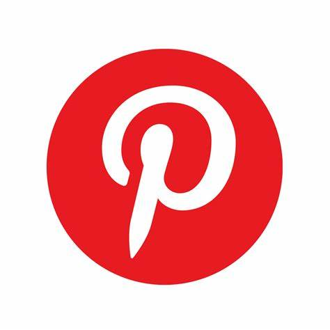

PINTEREST
O Pinterest é mais uma opção entre as redes de
compartilhamento de imagens e vídeos, e está disponível
gratuitamente tanto na internet quanto em aplicativos
para celulares smartphones. Após a criação da página pelo
usuário, o Pinterest funciona como um mural de imagens,
ou pins, no qual o internauta cria grandes painéis que são
como os álbuns por categorias ou assuntos. No Pinterest,
o usuário “pina” as fotos que achar mais interessantes
armazenando-as em pastas que ele próprio cria.
